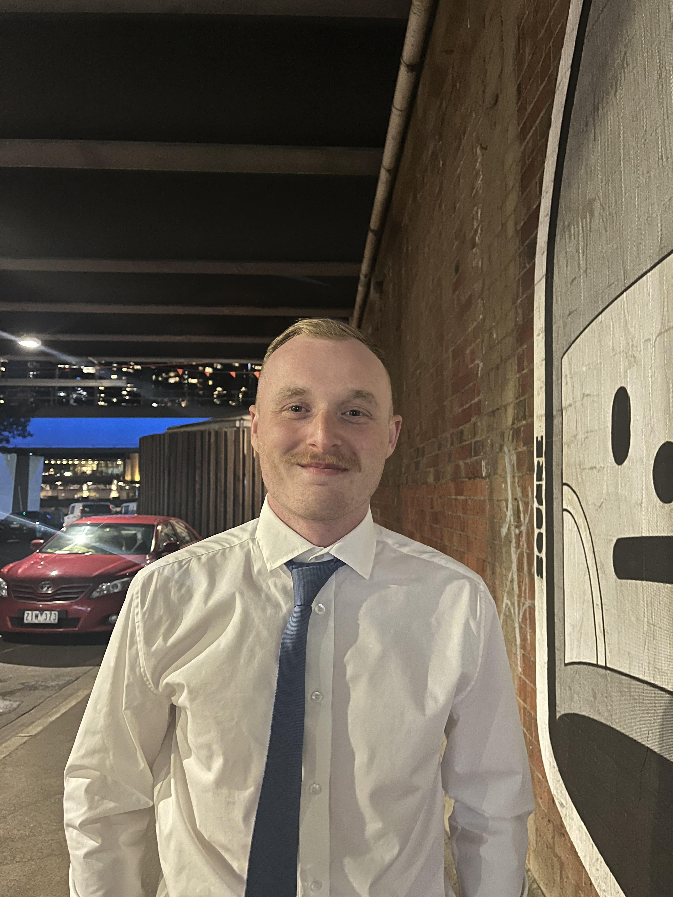
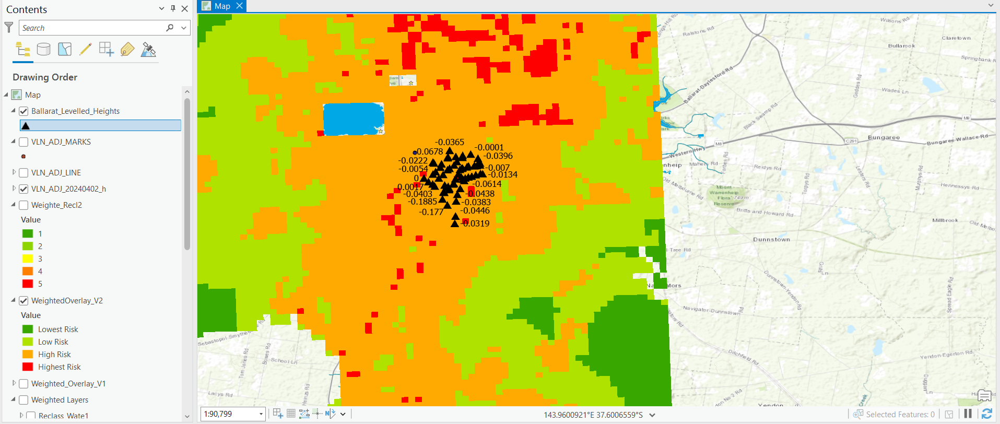
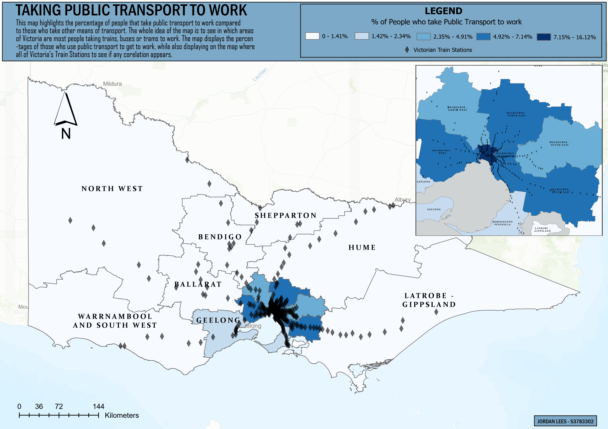
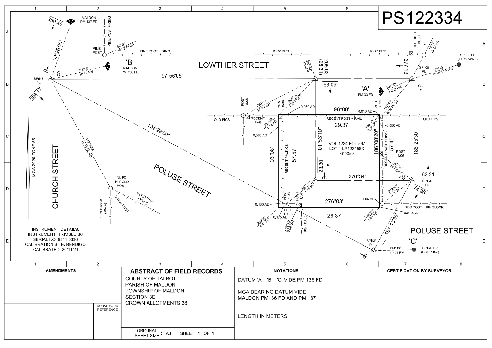

| Surveying Equipment: Total Stations, GNSS | |
 |
Software: AutoCAD, ArcGIS Pro, LisCAD |
| Drones and Photogrammetry |
I am Jordan Lees, a fourth-year student pursuing a Bachelor of Applied Science in Surveying at RMIT, with an expected graduation in November 2024. I have a passion for surveying and geospatial technology, especially in digital and spatial data applications such as using drones and scanning technology.
I have extensive experience working as a Survey Assistant at ESO Surveyors and Veris, as well as a Geodetic Survey Technical Officer at Survey-General Victoria, with a focus on engineering, cadastral, and geodetic surveying.
Below are some of the projects I've worked on during my academic career:
A detailed research project analyzing Australian Height Datum (AHD) discrepancies, including detection, underlying causes, and prediction models. The project included surveys using static and RTK kits and creating predictive overlays using ArcGIS Pro.
Cartography Subjects at University focused on creating maps using various programs. Below is a map that shows the percentage of people in Victoria who commute to work using public transport, highlighting areas with higher usage of trains, buses, and trams. It also marks the locations of train stations to explore potential correlations between station proximity and public transport use.
In my cadastral surveying subjects at university, I gained a comprehensive understanding of land tenure systems, boundary law, and the principles of re-establishing property boundaries. The coursework covered essential topics such as subdivision design, land administration, and the legal frameworks surrounding land ownership. I developed skills in researching historical survey data, interpreting survey plans, and applying cadastral principles to real-world scenarios.
A notable practical involved re-establishing the title boundaries for a block in Parkville. Working in a team, we used historical title plans, field notes, and modern survey equipment to locate and re-mark the original boundaries. This exercise provided hands-on experience in reconciling existing property data with current field measurements, and reinforced the importance of accuracy and attention to legal and physical boundary markers in cadastral surveying.
Assisted in the Camms Road level crossing removal project, where I played a key role in assisting the accurate measurement and positioning of survey data. My responsibilities included working alongside surveyors to perform setout for construction, and conduct precise measurements using advanced surveying equipment, ensuring compliance with project specifications and industry standards.
Completed a two-month internship with the Geodesy Department at Surveyor-General Victoria, where I gained hands-on experience in geodetic and high-precision surveying operations. My responsibilities included providing support for GPSnet, Victoria's continuously operating GPS network, and assisting with the Survey Mark Enquiry Service (SMES), which involved managing and maintaining survey control points. Additionally, I assisted in the execution of survey operations that contributed to Victoria’s geodetic infrastructure.
| Surveying Equipment: Total Stations, GNSS | |
|
Software: AutoCAD, ArcGIS Pro, LisCAD |
| Drones and Photogrammetry |
| Email: | jordanhlees@gmail.com |
|---|---|
| LinkedIn: |

|